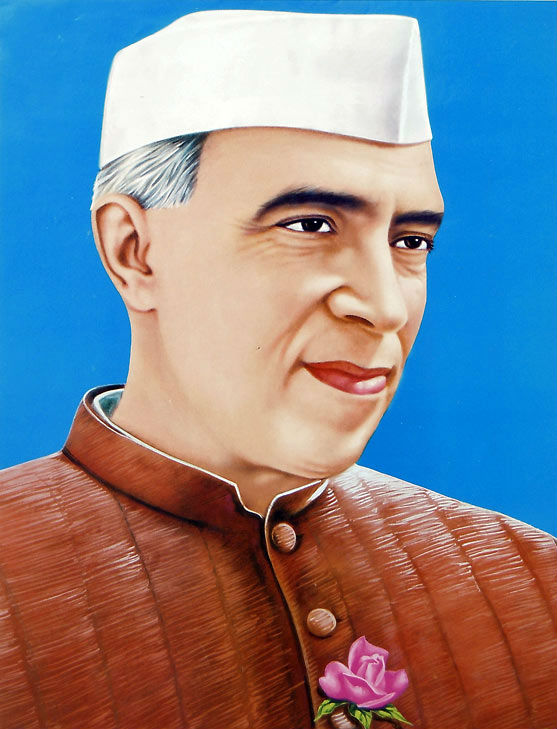

PT. JAWAHARLAL NEHRU

Born: 14 November 1889
Place of Birth: Allahabad
Parents: Motilal Nehru (father) and Swaruprani Thussu (mother)
Spouse: Kamala Nehru
Children: Indira Gandhi
Education: Harrow School, London; Trinity College, Cambridge; Inns of Court School of Law, London
Associations: Indian National Congress
Political Ideology: Nationalism; Socialism; Democracy; Communist influences
Religious Beliefs: Hinduism
Publications: The Discovery of India, Glimpses of World History, Toward Freedom, Letters from a Father to His Daughter
Passed Away: 27 May 1964
Memorial: Shantivan, New Delhi
Jawaharlal Nehru was the first Prime Minister of independent India. He was a member the Congress Party that led the freedom movement against the British rule. He was the chief framer of domestic and international policies during his term as PM between 1947 and 1964. It was under Nehru's supervision that India launched its first Five-Year Plan in 1951. Nehru was one of the architects to steer the nascent nation towards the brilliance envisioned by countless revolutionaries of the Indian Freedom struggle.
Childhood & Early Life
Jawaharlal Nehru was born on 14 November 1889, in a wealthy Kashmiri Brahmin family in Allahabad, Uttar Pradesh. His father, Motilal Nehru was a renowned advocate and also an influential political activist. Nehru family was elitist in most of their practices and English was spoken and encouraged. His father, Motilal Nehru appointed English and Scottish teachers to supervise his children’s education at home.
For higher education, young Nehru was sent to Harrow school, then later to Cambridge University in England to obtain a degree in natural sciences. After spending two years at the Inner Temple, London, he qualified as a barrister. During his stay in London, Nehru studied subjects like literature, politics, economics, and history. He got attracted to the ideas of liberalism, socialism and nationalism. In 1912, he returned to India and joined the Allahabad High Court Bar.
Nehru got married to Kamala Kaul on 8 February, 1916. Brought up in a traditional Hindu Brahmin family, Kamala felt an outsider amongst the progressive Nehru family but tried her best to adapt to the family ethos and values. During the Non-Cooperation movement of 1921, Kamala played a vital role by organizing groups of women and picketing shops selling foreign cloth and liquor in Allahabad. On19 November, 1917 she gave birth to a daughter, who came to be known as Indira Priyadarshini. Kamala died from tuberculosis in Switzerland on February 28, 1936, while Jawaharlal Nehru was in prison.